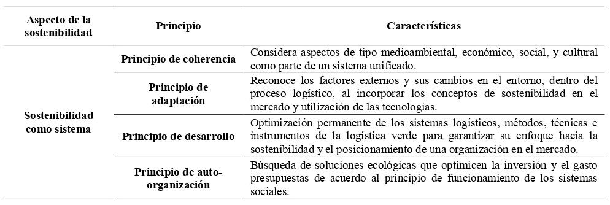
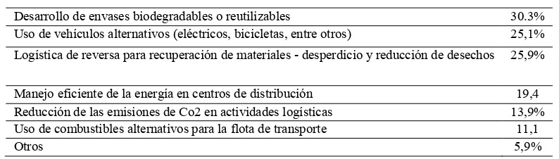
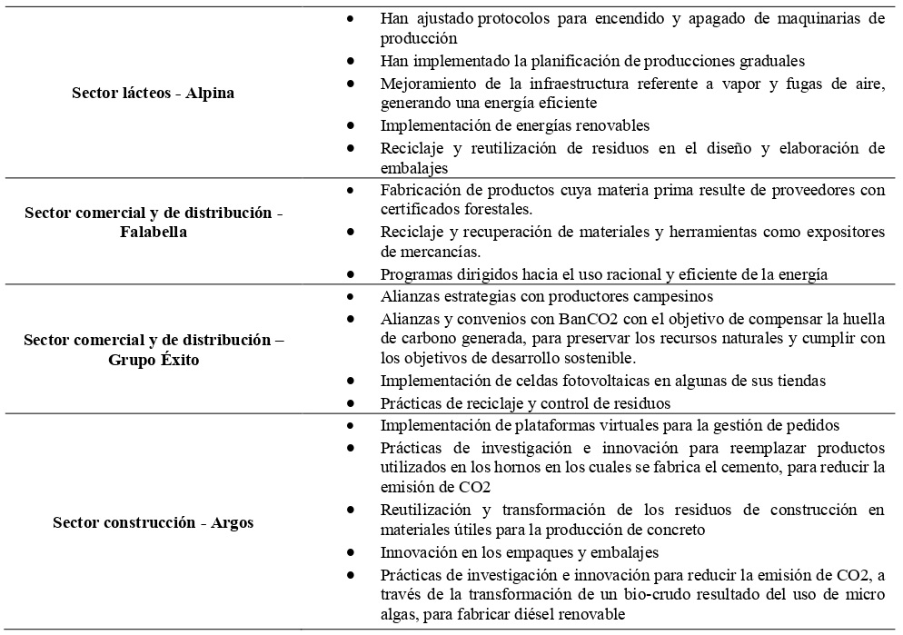
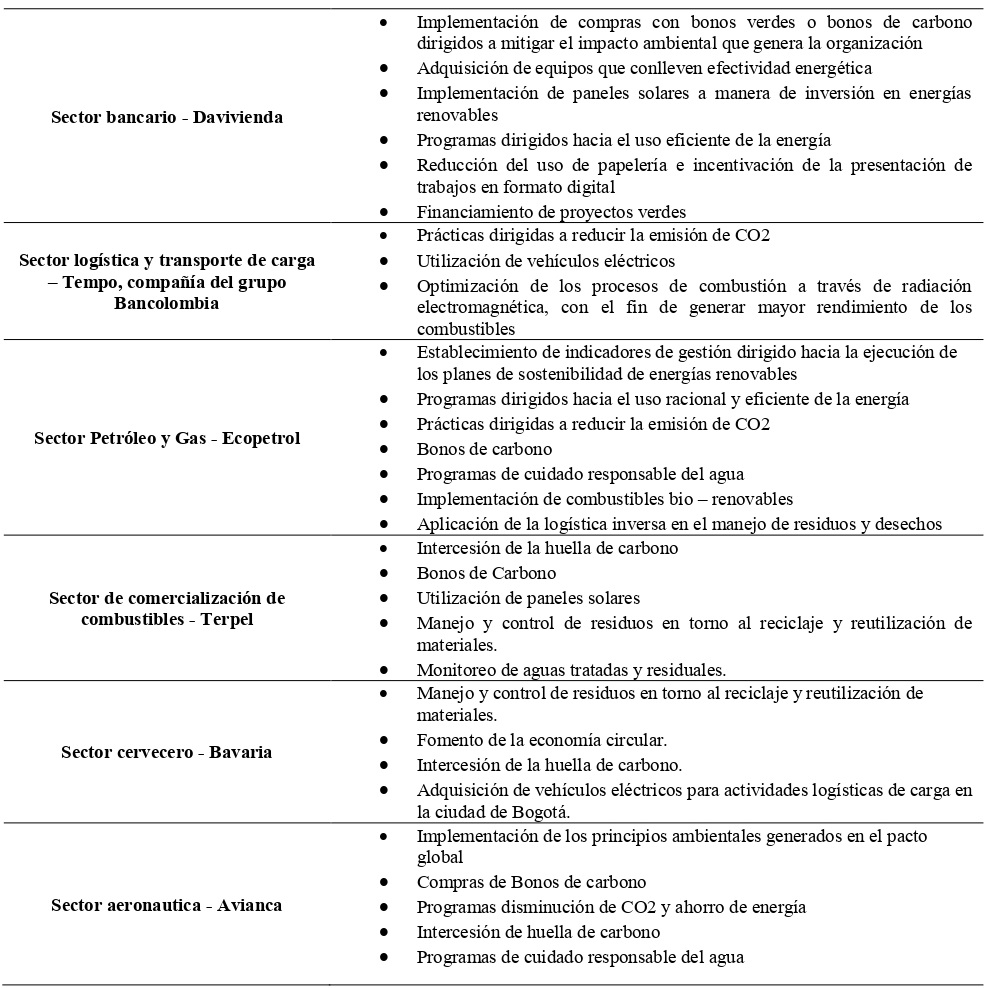
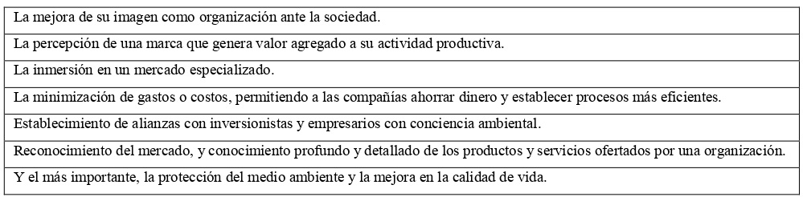

Introducción
El presente artículo de revisión parte de una mirada centrada en la internacionalización y la
sostenibilidad ambiental. Los cuales resultan ser aspectos relevantes a considerar en los modelos
de negocio establecidos por las empresas y organizaciones en Colombia que han adoptado la
logística verde dentro de los procesos que componen su cadena de suministro. De manera especial,
debido a que este tipo de logística se enfoca en dar continuidad a las actividades y estrategias que
buscan posicionar a una organización en un mercado nacional e internacional, mientras a su vez contemplan
las posibilidades para aumentar el rendimiento de sus capitales, minimizar los costos
y gastos en torno a la producción, y han apropiado un pensamiento verde, desde el cual generan
valor a sus productos o servicios y buscan mitigar los efectos nocivos que el proceso logístico
genera en el entorno medio ambiental.
Razón por la cual, el objetivo de este artículo es analizar los beneficios de la logística verde
en el comercio y los negocios internacionales desde una posición sustentada en el reconocimiento
de la evolución de conceptos, la aplicación y apropiación de prácticas de logística verde adoptadas
por empresas que hacen parte del mercado nacional e internacional del país y sus respectivas
ventajas competitivas. De allí que la fundamentación teórica parte de un análisis documental,
basado en la elaboración de una matriz de investigación centrada en el objeto de estudio.
De tal forma que la logística verde, parte de una filosofía organizacional en la cual los
factores económicos, sociales y ambientales, cuentan con gran relevancia. De manera especial, en
una época mediada por la globalización, en la cual las organizaciones se dirigen hacia la
internacionalización y deben reconocer su responsabilidad en torno a los procesos que puedan
incidir negativamente en el medio ambiente. El cambio climático es una realidad, de allí que
corresponde a las empresas y organizaciones apuntar al uso responsable de recursos renovables y
no renovables.
En tal sentido, estudios como los efectuados por Bustamante (2020); Camacho (2020);
Panagiotis y Panagiotis (2020); Perdomo y Corredor (2020); Rakhmangulov, Sladkowski,
Osintsev, y Muravev (2018); y Ocampo y Prada (2017), permiten contemplar como las industrias
verdes apuntan al desarrollo sostenible de la sociedad; la generación de empleo; el impulso de la
innovación, la competitividad y la productividad; la optimización de los programas de
emprendimiento y la aplicación de las tecnologías en torno a una oportunidad de crecimiento;
partiendo del reconocimiento de los desafíos actuales que afronta el mundo; desde una logística
verde o logística sostenible que trabaja para optimizar sus procesos y resultar más eficiente y eficaz,
haciendo frente a las barreras y dificultades que puedan surgir en torno a la cadena de suministro.
Metodología
El abordaje metodológico de la presente investigación se sustenta en el método cualitativo,
con un enfoque descriptivo. De allí, que se realizó una matriz documental, fundamentada en la
revisión y consulta bibliográfica de 25 fuentes primarias y secundarias de carácter científico sobre el
respectivo objeto de estudio. Las cuales se integran por artículos, tesis de grado, y la consulta de
páginas web e informes de instituciones de carácter privado.
Ahora bien, se hace necesario reiterar parte de los beneficios de la logística verde en el
comercio y los negocios internacionales. Camacho (2020) parte del reconocimiento de que las
organizaciones buscan generar competitividad, productividad y posicionamiento de marca en el
mercado, y han encontrado en la logística verde una forma de integrar en su filosofía organizacional
un enfoque centrado en la mitigación de los impactos nocivos que los procesos de la cadena de
suministro generan en el medio ambiente.
Motivo por el cual, se organiza la información más relevante en categorías de análisis que
parten de la relación entre la logística verde y sus conceptos o nociones como fundamento teórico;
su importancia, principios y el cómo se aplican las prácticas y estrategias sustentadas en esta
logística en organizaciones de carácter nacional las cuales cuentan con un respectivo
posicionamiento en el mercado nacional e internacional; a su vez, se establecen los principales
beneficios que la adopción de la logística verde conlleva para el comercio y los negocios
internacionales.
Desarrollo
Internacionalización, Objetivos de Desarrollo Sostenible y Logística Verde
En 2016, se celebró la Cumbre del Pacto Mundial de las Naciones Unidas (Rakhmangulov,
Sladkowski, Osintsev, y Muravev, 2018) a la cual asistieron más de 1200 participantes
pertenecientes a 75 países quienes se reunieron con el objetivo de debatir la forma en que las
organizaciones y empresas contribuyen al cumplimiento de los objetivos de desarrollo sostenible;
debido a que sus metas se han pactado para 2030. En tal sentido, no solo los gobiernos, sino los
líderes mundiales han reconocido la importancia de que sus negocios correspondan a la realidad
del planeta, el cual ha sido afectado negativamente en materia ambiental. De allí que la
sostenibilidad resulte una prioridad.
De acuerdo con Moto (2020) el cambio climático, y la degradación del medio ambiente,
producto del accionar humano, a través de un ámbito productivo y desde el consumo de artículos
que participan de la contaminación del entorno, ha generado una preocupación frente a la
concientización sobre el daño ambiental que se ha causado al planeta, de allí, que Quintero (2020)
exprese que las organizaciones asumen una postura sustentada en un principio de responsabilidad y compromiso
social con la sostenibilidad. Razón por la cual, en los últimos años, cada vez más se
incentiva un pensamiento verde cimentado en que las empresas deben agregar valor a sus productos
desde la innovación y la logística verde.
Los altos niveles de contaminación ambiental, han conllevado por tanto a que las personas
generen una mayor consciencia ambiental, y a que tal como mencionan Ruiz, González, y
Carmenate (2020), los gobiernos implementen medidas rigurosas para proteger el planeta y
fomentar una economía circular.
De allí que, para Ruiz, González, y Carmenate (2020), resulte clave generar una serie de
estrategias de diferenciación sostenible, las cuales puedan ser percibidas por los clientes, quienes
encuentran en estas alternativas una forma de obtener un artículo o servicio de calidad, que satisface
sus expectativas y necesidades. Y desde el cual se genera un valor agregado, al contribuir a
minimizar los impactos ambientales en el planeta.
En tal sentido, para Ruiz, González, y Carmenate (2020), la gestión logística cobra
importancia debido a que esta facilita el que se aplique un flujo ágil de productos y servicios,
buscando garantizar ventajas alrededor de la reducción de costos; el exceso de stock; los tiempos
de entrega; y el establecer una relación de confianza con el cliente, con el objetivo de favorecer la
fidelización del usuario hacia la marca.
Mientras a su vez, se reitera el compromiso de una organización ante temas de orden social
y ambiental. Lo cual desde los postulados de Vega (2020) esto se traduce en una imagen corporativa
positiva ante el mercado y la sociedad. Esto, debido a que los clientes suelen preferir a las empresas
con iniciativa hacia el cuidado del medio ambiente.
Por tanto, desde el comercio internacional, y su mirada estratégica y global, en la actualidad,
de acuerdo con la OCDE (2019) se reconoce el potencial de los negocios verdes en Colombia, de
allí que el crecimiento verde ha sido contemplado en el diseño y elaboración del plan nacional de
desarrollo, de manera especial, debido a que el país cuenta con una gran biodiversidad frente a su
fauna, flora y recursos naturales.
Logística verde o logística sostenible
Galarza y Lugo (2020); y Aguirre (2019), mencionan que la logística verde se refiere a la
forma en que se evalúa y replantea el accionar alrededor de la cadena de suministro de una
organización y su actividad productiva para establecer un enfoque medio ambiental.
La logística implica reconocer los procesos alrededor de la cadena de suministro, lo cual
parte desde la adquisición de la materia de un producto hasta la entrega final del mismo a su
respectivo cliente, sin embargo, en medio de un escenario marcado por la globalización, las
organizaciones han tomado conciencia sobre la importancia de aplicar el concepto de la logística
verde.
Este concepto logístico, de acuerdo con Ocampo y Prada (2017) nace como una filosofía
organizacional desde la cual se busca aumentar la productividad y el rendimiento económico en el
mercado de las empresas mientras al mismo tiempo se integran componentes ambientales dirigidos
a mitigar los impactos ambientales a través de la optimización de los procesos desde la
planificación de estrategias fundamentadas en la sostenibilidad.
También Ocampo y Prada (2017) señalan que entre las operaciones de la logística verde se
encuentra la manufactura; re manufactura; la logística inversa y la reutilización y re embalaje de
material que en lugar de desperdicio puede volver a aprovecharse.
Frente a esto se hace necesario diferenciar los conceptos de logística verde y logística
inversa. Algunos autores hacen uso indiscriminado de estos conceptos, entendiéndolos como el
mismo tipo de logística, sin embargo aunque ambos se encuentran alineados en un mismo enfoque,
se diferencian entre sí, debido a que al partir de las nociones de Dávila (2019) la primera se encarga
de la planificación y control alrededor del retorno de productos que cumplen con los criterios y
características necesarios, una vez han sido devueltos por un consumidor, y se encuentran en buen
estado para volver a ser integrados al mercado. Y si bien esto corresponde a un proceso complejo,
la logística verde por su parte implica un nivel de complejidad y profundidad más amplio en torno
al proceso logístico.
De allí que Ocampo y Prada (2017) manifiestan que la logística inversa se refiere al retorno
de producto; retorno al mercado; y los mercados secundarios; mientras en la logística verde el
principal objetivo se centra en el control del impacto ambiental (utilización de recursos naturales
renovables y no renovables); el control de las emisiones y ruidos contaminantes.
Acosta y Muñoz (2017) consideran por tanto que la logística verde es “una herramienta
que busca la optimización de los procesos y una forma de disminución al máximo de los residuos
o la buena disposición de los mismos, reduciendo de esta manera la presión que el hombre ejerce
sobre el planeta y sus recursos” (p. 5).
De ahí que Panagiotis y Panagiotis, (2020), afirman que la logística cuenta con un papel y
un importante potencial con respecto al control del cuidado del medio ambiente, desde su accionar
en los procesos de transporte de mercancías; el reciclado de productos; el ahorro de energía y
recursos; la minimización de la contaminación ambiental y demás aspectos de la cadena de
suministro que pueden ser abordados desde una logística verde.
Esto principalmente, debido a que desde la logística verde se busca un equilibrio o
armonización entre los principios logísticos, la economía de una organización y el cumplimiento
de los objetivos de desarrollo sostenible. De tal forma que su aplicación contribuya a mitigar el
impacto negativo sobre el medio ambiente.
Principios de la logística verde
El concepto de la logística verde parte del mejorar y potenciar el uso de los recursos
naturales renovables y no renovables que utilizan las organizaciones en su actividad productiva y
comercial.
Galarza y Lugo (2020) expresan que el término de logística verde, como concepto,
comienza a mencionarse al finalizar los años 60’s, como parte de la apertura y crecimiento
alrededor de los conocimientos de una época, en la cual, al utilizar el término verde, se empezaba
a relacionar con un enfoque de economía y medio ambiente.
En tanto, Vega (2020), manifiesta que el origen de este concepto parte de la década de los
70 (siglo XX), época en la cual surge una mayor preocupación en lo que corresponde a aspectos
medio ambientales. Los años 80 por otra parte, fortalecen los cimientos de un pensamiento dirigido
a la prevención de la contaminación. Su evolución, por tanto, cimienta las nociones actuales que
buscan el equilibrio entre las formas de producción de las organizaciones y su responsabilidad y
compromiso con el bienestar de las generaciones futuras.
Ahora bien, se hace necesario señalar que las prácticas verdes no son nuevas, estas, de
acuerdo a lo expuesto por Acosta y Muñoz (2017), se remontan a finales del siglo XX, y derivan
de Europa, a través de la conformación de movimientos orientados a la protección del medio
ambiente, desde donde se han extendido al resto del mundo. Estas prácticas se sustentan en
regulaciones y legislaciones ambientales, que han resultado de la industrialización de la sociedad.
En tal sentido, se debe hablar también de la economía circular, debido a que esta va de la
mano con la logística verde. Bustamante (2020) señala que este tipo de economía parte de la optimización de
las inversiones de capital y el control de la utilización de los recursos de una
organización. Desde el enfoque circular se encuentra que esta parte de tres principios esenciales,
sustentados en la preservación y optimización de los recursos naturales y la evaluación y fomento
de la eficacia de los sistemas organizaciones establecidos por una empresa.
Por tanto, al partir de una posición sustentada en un pensamiento verde, resulta fundamental
que este sistema logístico incluya un mecanismo de prácticas que correspondan con la
responsabilidad social de las organizaciones; su gestión medioambiental; los programas de
auditoria, control y evaluación de estrategias y acciones aplicadas, así como del reconocimiento de
las normativas y regulaciones gubernamentales alrededor del proceso logístico.
Dávila (2019), manifiesta que una vez se toma la decisión de implementar prácticas de
logística verde en un modelo de negocio se hace necesario contar con una metodología de
medición, de allí que el modelo Green Scor debería ser considerado por las organizaciones. Puesto
que este parte de monitorear las actividades logísticas de una organización relacionadas con
minimizar la huella de carbono; incentivar los programas de reciclaje y reutilización de materiales;
fomentar el control de emisiones contaminantes de aire, agua, suelos, entre otros; establecer planes
de concientización sobre el uso racional de la energía y del agua; determinar la importancia de las
alianzas estrategias con proveedores que garanticen un récord ambiental positivo; entre otros.
Razón por la cual los principios de la logística verde, no se centran únicamente en una
posición de beneficio económico, sino que buscan un equilibrio económico, desde una perspectiva
en la cual la organización debe generar y propender por su desarrollo económico, sin olvidar su
participación en el escenario social, cultural y medio ambiental.
Tabla 1. Sistematización de los principios de la logística verde


Fuente: Elaboración propia a partir de los postulados de akhmangulo, Sladkowski, Osintsev, y
Muravev (2018).
El reconocimiento de estos principios conlleva a las empresas a aplicar sistemas, métodos
e instrumentos que posibiliten buenas prácticas y a su vez faciliten el incorporar la gestión de
procesos tecnológicos, recursos e ideas innovadoras, que resulten atractivas para los consumidores
mientras a su vez estas contribuyen a reducir los efectos nocivos en materia ambiental.
La logística verde o logística sostenible, por tanto, según Herrero y Mora (2020) busca
integrar a los procesos productivos actividades relacionadas con el transporte ecológico, el diseño
y embalaje enfocado en la utilización de empaques biodegradables; así como en el mitigar el uso
desmedido de recursos naturales no renovables, la emisión de contaminantes y desechos que
afecten la degradación del ambiente.
Para Tovar (2019), en el país, el sector logístico de las organizaciones se enfrenta a diversos
desafíos a la hora de incursionar dentro del mercado nacional e internacional. Entre sus desafíos encuentran
que necesitan: “innovación en rutas; mejorar tiempos de entrega; incorporar nuevas
tecnologías de transporte, procesamiento de datos, conexiones y comunicaciones; mejorar y
acondicionar los equipos en las operaciones que permitan dar respuesta a la creciente demanda en
cada mercado y su especialidad” (P. 45)
Sin embargo, el estudio de Tovar (2019) también manifiesta que más del 60% de las
empresas en Colombia reiteran o manifiestan conductas que derivan en la resistencia al cambio; a
causa de que existe preocupación por el retorno de su inversión y falta de confianza en que
determinadas acciones realmente resulten de beneficio para su negocio.
Aspectos que principalmente afectan las pequeñas y medianas empresas, quienes a
diferencia de las multinacionales o grandes corporaciones deben asumir un costo más alto en sus
inversiones; y en muchos casos afrontar la insuficiencia de recursos con los cuales cuenta una
pequeña organización frente a una competencia consolidada en el mercado, con años de trayectoria,
lo cual puede traducirse en asumir que el no poder financiar los costos de actualización tecnológica
pueden derivar en la desaparición de la empresa.
Prácticas y estrategias de logística verde implementadas por las organizaciones
Camacho (2020) cita a Bloom (2020) para relacionar que en el ámbito del comercio
internacional resulta relevante reiterar que las variables en torno al crecimiento demográfico y el
desarrollo productivo son claves, debido a que se desprenden y sustentan en las teorías económicas
sobre la estructura en torno a la oferta y demanda del mercado.
También Camacho (2020) implica que es necesario para las organizaciones reconocer que
la prestación de servicios y oferta de productos se soporta en la utilización y disponibilidad de
insumos y materias primas que permiten elaborar y fabricar un producto final, y que estos
materiales dispuestos por las organizaciones provienen de la naturaleza y de sus recursos
renovables y no renovables.
Razón por la cual el autor cita al Departamento Nacional de Planeación (DNP, 2018) de
Colombia, para expresar que durante los últimos años, el gobierno nacional, a raíz de la Política
Pacto por la Sostenibilidad, implementada durante el gobierno de Duque, ha buscado establecer
normativas y políticas públicas relacionadas a la gestión ambiental, con el fin de mitigar y reducir
el impacto ambiental del cambio climático, a través del afianzamiento de acciones mediante las cuales se
reitere el compromiso de las empresas locales y extranjeras que operan en el territorio
nacional frente al desarrollo y crecimiento de la industria, y a su vez con la sostenibilidad.
Esto como una actuación dirigida a que el sector productivo asuma procesos sostenibles,
limpios y transparentes. Otras propuestas gubernamentales relacionadas, de acuerdo con Camacho
(2020) son: el Plan estratégico de mercados verdes y la Política Nacional de Producción y Consumo
Sostenible; las cuales se han dirigido hacia la mitigación de los efectos nocivos que han tenido
impacto en el medio ambiente debido al uso de los recursos naturales en actividades productivas y
dinámicas de consumo que de una u otra forma han generado daños irreparables en materia
ambiental.
Ahora bien, para las organizaciones o empresas que asumen una mirada global, resulta
necesario generar posicionamiento no solo en el mercado nacional sino a su vez en los mercados
extranjeros en los cuales sus marcas puedan incursionar, a través de los bienes o servicios que
ofertan a un consumidor.
Quintero (2020) encuentra que, en la actualidad, el generar valor a la cadena de suministro
ha conllevado a que las empresas colombianas reconozcan la importancia de implementar acciones
de logística verde. De tal forma que de acuerdo con Camacho (2020) las regulaciones se consolidan
como un marco o referencia que permite establecer criterios orientados a la determinación de
estrategias y medidas para la conservación ambiental; así como a la adopción de prácticas
productivas y sostenibles.
De allí que según (Quintero, 2020) el 51% de las empresas en el país establecen actuaciones
dirigidas a gestionar la protección del medio ambiente, al contribuir al desarrollo sostenible de los
recursos naturales del país. Entre las estrategias más aplicadas se mencionan las siguientes:
Tabla 2. Estrategias de logística verde aplicadas por las organizaciones

Fuente: Quintero, 2020, p. 31.
Estrategias que, desde una perspectiva cimentada en la globalización, reiteran que es
necesario que las organizaciones se adapten a la situación actual en la cual existe gran preocupación
por la sostenibilidad ambiental (Manjarres-Mejia, y Chirino-García, 2020) y (Paladines y Carranza,
2018).
Por otra parte, Cortes (2018), resalta que la aplicación de estrategias y prácticas de logística
verde también deriva de la actividad comercial de cada empresa u organización, así como de su
objetivo misional. De allí que manifiesta que según el objetivo o fin perseguido por una entidad se
genera la aplicación de sus estrategias. A continuación, se presentan las principales prácticas y
estrategias que han asumido algunas empresas colombianas con un posicionamiento de marca en
el mercado nacional, y cuya proyección incluso parte de una perspectiva fundamentada en la
internacionalización.
Tabla 3. Prácticas y estrategias implementadas por empresas nacionales con relación a la
adopción de la logística verde


Fuente: Elaboración propia a partir de los postulados de Cortes (2018)
El análisis de las prácticas verdes implementadas por las empresas mencionadas en
diferentes sectores del área industrial y de servicios en el país, según menciona Cortes, (2018),
permite evidenciar que existe una fuerte inclinación por implementar medidas dirigidas a reducir
la huella de carbono; el uso racional y eficiente de las energías; la utilización responsable del
recurso hídrico, y la implementación de programas y prácticas que respondan a los objetivos de desarrollo
sostenible y su posición frente a una logística que genere un menor impacto ambiental
nocivo.
Por tanto, Perdomo y Corredor (2020), también señalan, que en Colombia, las
organizaciones parten de una posición sustentada en la internacionalización, reconocen las
necesidades cambiantes que existen en materia de producción y competitividad logística, y a su
vez, en torno a los procesos logísticos sostenibles, de tal forma que estas estrategias y prácticas
contribuyen a la cadena de suministro de una organización mientras a su vez, establecen una pauta
de responsabilidad social con el medio ambiente, relacionada directamente con su actividad
económica y productiva.
Sin embargo, estas son prácticas que se deben trabajar en el país, debido a que Quintero
(2020) quien cita al DANE (2018) señala que en el país resulta un desafío el lograr utilizar de
manera eficiente los recursos naturales, tales como el agua, el suelo, o la energía eléctrica, con
respecto a la actividad productiva de una empresa. De allí que la investigación, la innovación y
ejecución de estas prácticas debería ser un lineamiento continuo dentro de las metas trazadas para
las organizaciones, trazando como referencia los Objetivos de desarrollo sostenible fijados por la
OCDE.
Resultados
La logística resulta un elemento relevante, cuando se trata de generar procesos que parten
de la cadena de suministro, pero modifican su accionar para resultar más amigables con el
ambiente.
Ahora bien, al reconocer las actividades en torno a fabricación, almacenamiento y
distribución que son parte de la cadena de suministro, la cadena de abastecimiento verde según
expresa Álvarez, (2019) puede observarse desde una posición cimentada en las ventajas
competitivas y los beneficios que el aplicar una logística verde conlleva para las organizaciones.
En tal sentido Zabaleta (2020), y Tirado y Velásquez (2020) señalan que desde la logística
verde se pueden encontrar oportunidades para reducir los costos; y generar posicionamiento de
marca, debido a que una organización puede utilizar la logística como una herramienta para
presentarse como una compañía que genera valor agregado y se diferencia de su competencia en el
mercado.
También resulta necesario señalar que de acuerdo con Zabaleta (2020) la logística inversa
se integra como parte de la logística verde y la economía circular, que se dirige hacia el generar un
beneficio ambiental y mejorar la calidad de vida de los habitantes del planeta. Desde la
participación en la mitigación del cambio climático y el propender por estrategias alrededor del
marketing verde, y las prácticas de utilización racional de los recursos naturales, así como aquellas
relacionadas con el embalaje; el reciclaje y la reutilización de materiales.
De tal forma que como manifiesta Moto (2020) aplicar esta logística resulta en una
alternativa a la degración ambiental propiciada por el accionar que tiene lugar alrededor de la
cadena de suministro. De allí que entre los principales beneficios de la logística verde para las
organizaciones se encuentren:

Fuente: Navarro-Márquez, Saida & Restrepo-Osorio Maryuri
xxxxxxxxxxxxxx

xxxxxxxxxxxxxxxxxx
Los beneficios que genera esta logística, según Agyabeng-Mensah, Afum, y Ahenkorah
(2020) parten de factores sociales, económicos, y ambientales, que surgen de una toma de
decisiones responsable por parte de una organización que reconoce que debe planificar su accionar
y el cumplimiento de sus metas y estrategias, pensando en el consumidor final de sus productos y
servicios.
Esta innovación, se evidencia como una ventaja competitiva, que parte de la búsqueda de
nuevos métodos sostenibles, que permiten a las empresas estar preparadas para dar cumplimiento
a la legislación y la normativa ambiental en el país. Y a su vez, para la posible adopción de las
nuevas leyes o normas que puedan surgir, de tal forma que las empresas no incurran en sanciones,
gastos innecesarios y la pérdida de su reputación.
Esto resulta especialmente relevante, para las organizaciones en el país, que tienen una
perspectiva de internacionalización. Debido a que a partir de lo expuesto por CEPAL (2018) en las
agendas internacionales de los diferentes países el fenómeno de la globalización trajo consigo
varias prácticas que resultaron nocivas para el planeta. Motivo por el cual en la actualidad resulta de
importancia reconocer la responsabilidad que tienen las empresas con los procesos desarrollados
alrededor de su actividad económica.
Al partir desde esta posición, el fenómeno de la internacionalización puede establecerse
como una meta para las organizaciones que logran comprometerse con un pensamiento verde,
debido a que estas son capaces de reducir o mitigar los costos y gastos en torno a la producción,
distribución y comercialización que parten desde su posicionamiento en el mercado nacional hacia
su incursión en mercados extranjeros.
Discusión
Moto (2020) encuentra necesario que las organizaciones reconozcan los beneficios y el
potencial de implementar la logística verde; al partir de las ventajas que esto genera a una empresa
en términos de ahorro de recursos, dinero, y mejora de la imagen corporativa; sin embargo, para el
autor se hace necesario señalar que la principal contribución de la logística verde se enfoca en la
protección medioambiental y la mejora de calidad de vida de quienes habitan el planeta.
En tal sentido, el autor encuentra que los procesos alrededor de la cadena de suministro por
parte de la logística verde son capaces de seguridad el bienestar de la sociedad al lograr que las
organizaciones establezcan prácticas y estrategias racionales ante la responsabilidad que se da al
trato de los recursos o insumos con los cuales cuentan para la obtención de su actividad productiva.
También Manjarres-Mejia y Chirino-García (2020) encuentran que desde la alta gerencia y
los directivos de una organización se deben discutir las ventajas y beneficios de la logística verde,
debido a que los últimos años su ejecución ha sido abordada desde una visión sustentada en la
aplicación de una tendencia de moda, debido a que existen quienes creen que realmente lo
relacionado a un aspecto medioambiental no puede suscitar un beneficio económico para as
empresas.
Sin embargo, Paladines y Carranza (2019) afirman que al partir de esta situación es desde
donde el gobierno, las empresas y los consumidores deben incrementar sus esfuerzos para generar
una verdadera consciencia ambiental frente a la importancia de la mitigación de los impactos en el
medio ambiente y el cómo frenar las acciones o actividades que dan continuidad al cambio
climático resultado de la repercusión negativa del accionar de las organizaciones sobre el
ambiente.
De allí que Manjarres-Mejia y Chirino-García (2020) encuentren que “resulta perentorio
que el sector empresarial efectúe mejoras en las prácticas logísticas para la implementación del
tema ambiental dado el mal uso de energía, la utilización de materiales, así como materias primas
poco amigables con el medio ambiente, dado que ello apareja una problemática que, dado el
incremento de la población, así como el surgimiento de nuevas empresas e industrias agravan y
amenazan las generaciones futuras” (p. 11)
En tal sentido, se trata de abordar una problemática social, que compete a cada una de las
personas que habitan el planeta, debido a que estamos hablando del futuro de la humanidad, y de
la necesidad de incentivar el cambio; ahora bien Bustamante (2020) encuentra que el abordaje de
prácticas de logística verde ha permitido que las organizaciones puedan analizar su esquema y
estructura laboral y encontrar formas para reducir el desperdicio de materia prima; así como de
recursos como el agua y la energía, razón por la cual el surgimiento de campañas al interior de las
empresas en torno al uso responsable del agua y la energía, resulta importante, debido a que no
solo se contribuye a la mitigación del desperdicio de un recurso valioso, sino también al ahorro
económico que las organizaciones pueden evidenciar al reducir los costos o gastos alrededor de la
contratación de las empresas públicas o privadas que aportan estos servicios.
Por su parte Paladines y Carranza (2019) encuentran que son pocas las empresas que
realmente aplican medidas de sostenibilidad ambiental a través de la logística verde. Un ejemplo
de esto, se encuentra, en que el autor menciona que, en el Ecuador, existe una tendencia a continuar
implementando prácticas de logística tradicional, o que han decidido apropiar una logística inversa,
sin llegar a comprender la importancia de la logística verde en la cadena de suministros y su
enfoque hacia la sostenibilidad.
Razón por la cual, para Vega (2020) estas situaciones se reconocen como desafíos a los
cuales se enfrenta la logística verde debido a varios factores. Entre los cuales se encuentran: La
dependencia de combustibles fósiles; la necesidad de generar grandes inversiones dirigidos al
rediseño de procesos o sistemas en torno a los aspectos logísticos; el involucramiento de todas las
áreas, dependencias y sectores que interactúan entre sí alrededor de la cadena de suministro; el que
todos los grupos de interés de una organización realmente asuman una posición sustentada en el
compromiso y responsabilidad medioambiental; el cumplir las expectativas y necesidades de los
clientes; y uno de los más importantes de acuerdo con Zabaleta (2020) conseguir una financiación adecuada
por parte de las entidades bancarias para soportar un modelo de negocio amigable y
sostenible en materia ambiental.
De allí que si bien las empresas tienen en cuenta que su actividad productiva se centra en
la oferta de servicios y productos que responden a una necesidad o expectativa de un cliente, parten
de acuerdo con Camacho (2020) de la utilización de recursos naturales, en torno a sectores como
el de vivienda, transporte, energía, turismo, alimentos, entre otros, deben contemplar y retirar su
compromiso y responsabilidad desde una posición sustenta en el conocimiento que la logística
verde puede aportar a cada organización y empresa de acuerdo al sector en que esta ubica su
actividad productividad.
Conclusiones
Para las empresas y organizaciones de carácter nacional, que tienen una perspectiva
orientada hacia la internacionalización de su modelo de negocio, la adopción de una logística verde
en su cadena de suministro resulta una elección que parte de una concepción filosófica en la cual
la actividad económica o productiva de una organización, debe reconocer el impacto que su
accionar genera al medio ambiente, y establecer prácticas para minimizar la degradación ambiental,
de manera especial, debido a que esto influye directamente en la calidad de vida de quienes habitan
en el planeta. Esto, puesto que la evolución del cambio climática afecta el crecimiento y desarrollo
de las sociedades. De allí que más de 75 países se han comprometido a generar iniciativas dirigidas
a lograr el cumplimiento de los objetivos de desarrollo sostenible que se han pactado para el año
2030.
Por otra parte, el que las organizaciones contemplen cuál es su papel y su correlación con
la realidad del planeta, puede abordarse desde una posición cimentada en las ventajas y beneficios
a nivel competitivo y productivo que la aplicación de la logística verde trae consigo para las
empresas. Debido a que si bien esta cuenta con un enfoque orientado a la mitigación del daño
ambiental, también participa de la mejora de la imagen de las organizaciones; el establecimiento
de una marca que genera valor agregado; facilita su posicionamiento en el mercado; la disminución
de gastos y la fidelización de clientes. Al encontrar que los consumidores de un bien o servicio
también orientan su toma de decisiones, y encuentran una mayor conexión al compartir principios
y valores con aquellas empresas que reiteran su compromiso, y establecen sus valores alrededor de
este tipo de filosofía.
Ahora bien, son varios los desafíos que las empresas en el país deben afrontar con el
objetivo de continuar estableciendo prácticas que resulten amigables con el medio ambiente.
Debido a que, si bien existen fortalezas en la aplicación de la logística verde, como una alternativa
hacia la sostenibilidad, también son varios los desafíos y obstáculos que deben superarse, al hablar
de una verdadera concientización ambiental.
Referencias
- Acosta, L. M. & Muñoz, A. D. (2017). “Logística verde: universo de oportunidades empresariales
y desafíos educativos, que busca brindarle un respiro al planeta”. Universidad de San
Buenaventura Medellín, Facultad de Ciencias Empresariales. Obtenido de:
http://bibliotecadigital.usb.edu.co/bitstream/10819/3611/3/Logistica_Verde_Oportunidades_Acosta_2017.pdf
- Aguirre, G. (2019) Aplicaciones de logística verde en contextos empresariales. [Documento de
Especialización] Universidad Militar Nueva Granada. Obtenido de:
https://repository.unimilitar.edu.co/handle/10654/32176
- Agyabeng-Mensah, Y., Afum, E. y Ahenkorah, E. (2020) Exploring financial performance and
green logistics management practices: Examining the mediating influences of market,
environmental and social performances. Journal of Cleaner Production, Vol. 258. Obtenido
de: sciencedirect.com/science/article/abs/pii/S0959652620306600
- Álvarez, E. (2019) Beneficios económicos y ambientales de la logística inversa en los RAEE.
Universidad Santiago de Cali. Obtenido de:
https://repository.usc.edu.co/bitstream/handle/20.500.12421/139/
- Bustamante, D. (2020) Estrategias de logística verde en microempresas productoras de plástico de
la ciudad de Medellín - Antioquia. [Trabajo de grado] Universidad Pontificia Bolivariana.
Obtenido de:
https://repository.upb.edu.co/bitstream/handle/20.500.11912/5944/Estrategias%20logística%20verde%20microempresas.pdf?sequence=1&isAllowed=y
- Camacho, E. (2020) Análisis del impacto socio ambiental de la política de mercados y negocios
verdes en Colombia (2016-2020) [Tesis de grado]. Universidad Santo Tomás.
- Comisión Económica para América Latina y El Caribe (CEPAL) (2018) Perspectivas del Comercio
Internacional de América Latina y el Caribe. Santiago.
- Cortés, L. (2019) Actualización del estado del arte sobre logística verde: aplicación en la
industria
colombiana. [Tesis de Grado] Universidad Católica de Colombia. Obtenido de:
https://repository.ucatolica.edu.co/bitstream/10983/24507/1/
- Dávila, L. (2019) Logística sostenible. Universidad Santiago de Cali. Obtenido de:
https://repository.usc.edu.co/handle/20.500.12421/1032?show=full
- Galarza, M., y Lugo, J. (2020) Evaluación de los impactos de la implementación de la logística
verde en minas exportadoras de oro ubicadas en la macro región norte del Perú en el periodo
2013-2018 [Tesis de grado] Universidad Peruana de Ciencias Aplicadas. Obtenido de:
https://repositorioacademico.upc.edu.pe/bitstream/handle/10757/650357/galarza_cm.pdf?sequence=4&isAllowed=y
- Herrera, A., y Mora, C. (2020) ¿Por qué es importante la logística 4,0 en las empresas pymes de
Bogotá? Universidad Cooperativa de Colombia. Obtenido de:
https://repository.ucc.edu.co/bitstream/20.500.12494/18029/1/2020_Log%C3%ADstica_empresas_pymes.pdf
- Manjarres-Mejia, A., y Chirino-García, R. (2020) Logística verde: Reto Gerencial para el manejo
de la Gestión Ambiental Sostenible, Revista CienciaMatria, Vol. 6, No. 11, pp. 4-21.
Obtenido de: https://dialnet.unirioja.es/servlet/articulo?codigo=7390990
- Moto, G. (2020) Aplicación de la economía circular: el impacto de la logística verde en las
emisiones de co2 en la ue. [Tesis de Maestría] Universidad Veracruzana. Obtenido de:
https://www.uv.mx/meae/files/2020/08/Aplicacion-de-la-Economia-Circular-El-impactode-la-Logistica-Verde-en-las-emisiones-de-CO2-en-la-UE.-Alma-G.-Moto-Chagala.pdf
- Ocampo, P. y Prada, R. (2017) Manejo de residuos industriales y la logística verde en el sector
de
lípidos. Journal of Technology, Volumen 16, Número 1, Págs. 33-46. Obtenido de:
https://dialnet.unirioja.es/servlet/articulo?codigo=6546155
- OECD (2019) Estudios Económicos de la OCDE: Colombia 2019, OECD Publishing, Paris.
- Paladines, M., y Carranza, G. (2019) Logística verde aplicada a la exportación de Banano
tradicional en la empresa Diversfacil S.A. [Tesis de Grado] Universidad de Guayaquil.
Obtenido de: http://repositorio.ug.edu.ec/handle/redug/38832
- Panagiotis, G., y Panagiotis, R. (2020) Implications of Green Logistics Management on
Sustainable
Business and Supply Chain Performance: Evidence from a Survey in the Greek Agri-Food Sector.
Sustainability 12 (24), Pp. 1-29. Obtenido de: https://www.mdpi.com/2071-1050/12/24/10515/htm
- Perdomo, L. y Corredor, M. (2020) Métodos de innovación de las mega tendencias mundiales en
la logística de C.I. Agrososa LTDA. Universidad Cooperativa de Colombia. Obtenido de:
https://repository.ucc.edu.co/handle/20.500.12494/33166
- Quintero, C. (2020) Diseño de un modelo de logística verde para la empresa red integradora
s.a.sredservi. [Tesis de Maestría]. Fundación Universidad de América. Obtenido de:
https://repository.uamerica.edu.co/bitstream/20.500.11839/7837/1/4293-2020-I-MBA.pdf
- Rakhmangulov, A., Sladkowski, A., Osintsev, N., y Muravev, D. (2018) Green Logistics: Element
of the Sustainable Development Concept. Part 1. “Naše more” 64 (3), pp. 120-126.
Obtenido de:
https://www.researchgate.net/publication/320898692_Green_Logistics_Element_of_the_Sustainable_Development_Concept_Part_1
- Tirado, I. y Velásquez, C. (2020) Evolución de los costos logísticos del sector agropecuario en
Colombia, Periodo 2012-2018. Tecnológico de Antioquia Institución Universitaria.
Obtenido de:
https://dspace.tdea.edu.co/bitstream/handle/tdea/632/Costos%20Logisticos.pdf?sequence=1&isAllowed=y
- Tovar W. (2019) Colombia: Sector Logístico - Bastión de Competitividad - Análisis &
Perspectivas. Cámara de Comercio de Bogotá. Obtenido de:
https://bibliotecadigital.ccb.org.co/handle/11520/23400
- Vega, H. (2020) Aplicación de prácticas de logística verde en las fases de embalaje y
distribución
de la cadena de suministro: análisis de varios casos de estudio. [Tesis de grado] Universidad
de León. Obtenido de: https://buleria.unileon.es/handle/10612/12403
- Zabaleta, V. (2020) Desarrollo de negocios verdes en Colombia y sus procesos de
internacionalización. [Trabajo de grado] Universidad El Bosque. Obtenido de:
https://repositorio.unbosque.edu.co/bitstream/handle/20.500.12495/3041/Zabaleta_Guzman_Valentina_2020.pdf?sequence=1&isAllowed=

 Profesional en Administración de
Empresas, Especialista en Educación Emprendimiento y Economía Solidaria, Magister en Gerencia de Empresas
Mención Finanza, Doctor en Gerencia, Postdoctorado en Políticas Publicas y Educación,
millerrs@ufps.edu.co,
Universidad Francisco de Paula Santander, Colombia.
Profesional en Administración de
Empresas, Especialista en Educación Emprendimiento y Economía Solidaria, Magister en Gerencia de Empresas
Mención Finanza, Doctor en Gerencia, Postdoctorado en Políticas Publicas y Educación,
millerrs@ufps.edu.co,
Universidad Francisco de Paula Santander, Colombia.